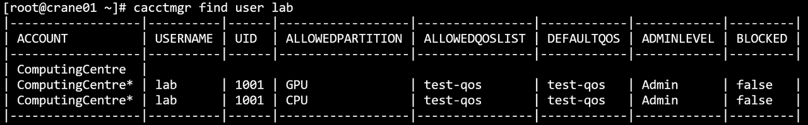
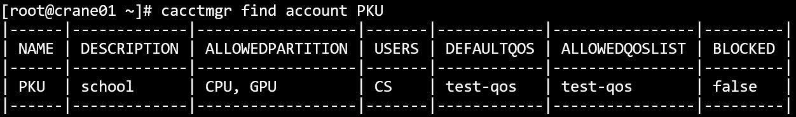

cacctmgr 管理用户/账户信息
cacctmgr 可以管理账户/用户信息，包括添加账户/用户、删除账户/用户、查找账户/用户。
Crane作业调度系统中有三个用户角色：
- 系统管理员（Admin）：一般为root用户，可以增删查改任何账户和用户信息
- 平台管理员（Operator）：对账户系统具有完全权限，可以查看private data
- 账户调度员（Coordinator）：对与自身同一账户下的用户以及对自身账户的子账户具有操作权限，包括添加用户
- 普通用户(None)： 除了查询功能外不具备其他权限，能够查询与自身同一账户下的信息，不可以修改所有用户和账户信息
主要参数
- -h/--help: 显示帮助
- -C, --config string： 配置文件路径（默认为"/etc/crane/config.yaml"）
主要命令
- add: 添加实体
- block：阻止该实体，使其无法使用
- completion：为指定的 shell 生成自动完成脚本
- delete：删除实体
- find：找到特定实体
- help：获得关于任何命令的帮助
- modify：改变实体
- show：显示一个实体的所有记录
- unblock：解除阻止实体
1. 添加qos
主要参数
- -D, --description string： qos描述信息
- -h, --help： 帮助
- -c, --max_cpus_per_user uint32： 默认为10
- -J, --max_jobs_per_user uint32
- -T, --max_time_limit_per_task uint： 以秒为单位的时间（默认3600）
- -N, --name string：qos的名称
- -P, --priority uint32：默认为1000
- 例
cacctmgr add qos -N=test -D="test qos"
- 例
2. 添加账户
主要参数
- -Q, --default_qos string： 账户默认qos
- -D, --description string：账号描述信息
- -h, --help： 帮助
- -N, --name string： 账户的名称
- -P, --parent string：此账户的父账户
- -p, --partition strings： 该账号可以访问的分区列表
-q, --qos_list strings：账号可以访问的qos列表
- 例：（添加账户PKU并添加PKU的子账户ComputingCentre）
cacctmgr add account -N=PKU -D=school -p=CPU,GPU -q=test
cacctmgr add account -N=ComputingCentre -D=department -P=PKU
- 例：（添加账户PKU并添加PKU的子账户ComputingCentre）
3. 添加用户
系统管理员可以添加任意账户的用户， 账户管理员可以添加同一账号下的新用户。添加的用户需要先有uid（先使用useradd在linux系统添加该用户）。
主要参数
- -A, --account string： 此用户所属的父账户
- -c, --coordinate：设置用户是否为父账号的账户调度员（coordinator）
- -h, --help： 帮助
- -L, --level string：设置用户权限(none/operator/admin) (默认为 "none")
- -N, --name string： 用户的名称
- -p, --partition strings： 该用户可以访问的分区列表
- 例
useradd CScacctmgr add user -N=CS -A=PKU -p=CPU,GPU -L=admin # -p参数指明用户可用分区为CPU和GPU（分区必须同时为父账户PKU的可用分区），分区的allowed_qos_list与default_qos信息不支持指定，默认从父账户PKU中继承
cacctmgr add user -N=lab -A=ComputingCentre # 未指明-p参数，partition与qos信息都从父账户ComputingCentre中继承
- 例
4. 删除用户
系统管理员可以删除任意账户下的用户， 账户管理员可以删除同一账户下的新用户。
cacctmgr delete user lab

5. 删除账户
仅系统管理员可以删除账户，删除账户时会检查账户下是否还有子账户或者用户，如果有则不允许删除，防止产生游离的用户，需要将其子账户和用户都设置在新账户下。
cacctmgr delete account ComputingCentre

6. 删除qos
cacctmgr delete qos test

7. 阻止用户或账户
主要命令
- account： 阻止账户
- user：阻止账户下的用户
cacctmgr block user lab -A=ComputingCentrecacctmgr block account ComputingCentre
8. 解除阻止用户或账户
主要命令
- account： 阻止账户
- user：阻止账户下的用户
cacctmgr unblock user lab -A=ComputingCentre
cacctmgr unblock account ComputingCentre
9. 查找用户
所有用户均可以使用查询功能
cacctmgr find user lab

cacctmgr find user CS

10. 查找账户
cacctmgr find account ComputingCentre

cacctmgr find account PKU

11. 查找qos
cacctmgr find qos test

12. 修改账户
系统管理员可以修改任意信息， 账户管理员可以修改本身账户的信息，但不能更改账户的父账户。
cacctmgr modify account -name=China -describe=Splendid
主要参数
- --add_allowed_partition string：将新项添加到允许的分区列表
- --add_allowed_qos_list strings：将新项添加到允许的qos列表
- -Q, --default_qos string： 修改账户默认qos
- --delete_allowed_partition string：从允许的分区列表中删除特定项目
- --delete_allowed_qos_list strings：从允许的qos列表中删除特定项目
- -D, --description string：修改账户的描述信息
- -F, --force： 强制操作
- -h, --help： 帮助
- -N, --name string：需要进行修改的账户名称
- --set_allowed_partition strings：设置允许的分区列表的内容
- --set_allowed_qos_list strings：设置允许的qos列表的内容
- 例：
cacctmgr modify account -N=ComputingCentre -D="Located in PKU"
- 例：
13. 修改用户
系统管理员可以修改任意信息， 账户管理员可以修改同账户下用户的信息，但不能更改用户的账户。
主要参数
- -A, --account string：设置用户使用的帐号
- --add_allowed_partition strings：将新项添加到允许的分区列表
- --add_allowed_qos_list string：将新项添加到允许的qos列表
- -L, --admin_level string：设置用户管理权限（none/operator/admin）
- -Q, --default_qos string： 修改账户默认qos
- --delete_allowed_partition strings：从允许的分区列表中删除特定项目
- --delete_allowed_qos_list string：从允许的qos列表中删除特定项目
- -F, --force： 强制操作
- -h, --help： 帮助
- -N, --name string：需要进行修改的用户名称
- -p, --partition string：被修改的分区，如果不显式设置该参数，默认修改所有分区
- --set_allowed_partition strings：设置允许的分区列表的内容
--set_allowed_qos_list strings：设置允许的qos列表的内容
- 例：
cacctmgr modify user -N=lab -A=ComputingCentre -L=operator --delete_allowed_partition GPU
- 例：
14. 修改qos
系统管理员可以修改任意信息， 账户管理员可以修改同账户下用户的信息，但不能更改用户的账户。
主要参数
- -D, --description string：修改qos的描述信息
- -h, --help： 帮助
- -c, --max_cpus_per_user uint32：(默认10)
- -J, --max_jobs_per_user uint32
- -T, --max_time_limit_per_task uint：以秒为单位的时间（默认 3600）
- -N, --name string： 需要进行修改的qos名称
- -P, --priority uint32：(默认1000)
15. 显示账户树
系统管理员会显示数据库所有根账户的账户树， 账户管理员和用户会显示本身账户的账户树。
cacctmgr show accounts

16. 显示用户
系统管理员会显示所有用户， 账户管理员和用户会显示同一账户下的所有用户。
cacctmgr show users